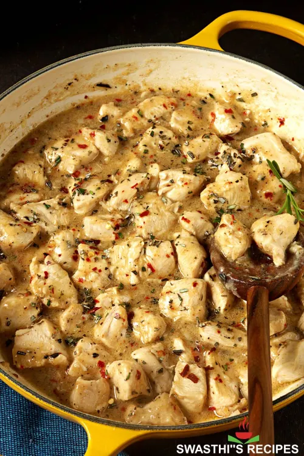

Home
Garlic Chicken

Description
If you're looking for a quick dinner that's packed with flavor and doesn't require hours in the kitchen, this Garlic Chicken recipe is a winner. It's one of those simple, go-to meals that delivers restaurant-quality taste with just a few pantry staples. Juicy chicken is pan-seared to golden perfection, then simmered in a rich, buttery garlic sauce that's nothing short of addictive.
Whether you're cooking for a busy weeknight, entertaining guests, or meal prepping for the week ahead, this dish checks all the boxes. It pairs beautifully with mashed potatoes, rice, pasta, or roasted veggies—and it’s done in under 30 minutes!
Ingredients:
- 4 boneless, skinless chicken breasts (or thighs)
- 6 cloves garlic, finely minced (or more if you love garlic!)
- 2 tbsp olive oil
- 1 tbsp butter
- 1 tsp salt
- ½ tsp freshly ground black pepper
- ½ tsp paprika (optional, for color and depth)
- 1 tsp dried thyme or Italian seasoning
- ½ cup chicken broth or dry white wine
- 2 tbsp chopped fresh parsley (for garnish)
- Lemon wedges (optional, for serving)
Instructions:
Prepare the Chicken:
- Pat chicken dry with paper towels.
- Season both sides generously with salt, pepper, paprika, and thyme.
Sear the Chicken:
- Heat olive oil in a large skillet over medium heat.
- Add chicken and cook for 5–7 minutes per side until golden brown and fully cooked (internal temp of 165°F / 74°C).
- Transfer the chicken to a plate and keep warm.
Make the Garlic Sauce:
- Reduce heat to medium-low. In the same skillet, melt the butter.Add the minced garlic and sauté for 1–2 minutes until fragrant—be careful not to burn it!
- Pour in chicken broth (or wine), scraping up any browned bits from the pan.Simmer the sauce for 3–5 minutes to reduce slightly.
Combine and Finish:
- Return the chicken to the skillet. Spoon the sauce over the chicken and simmer for another 2–3 minutes to let the flavors meld.
Serve and Enjoy:
- Garnish with fresh parsley and a squeeze of lemon if desired.Serve hot with your favorite sides!